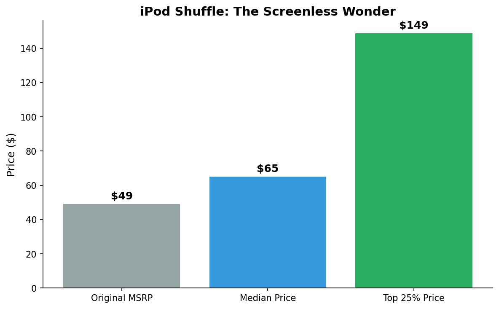
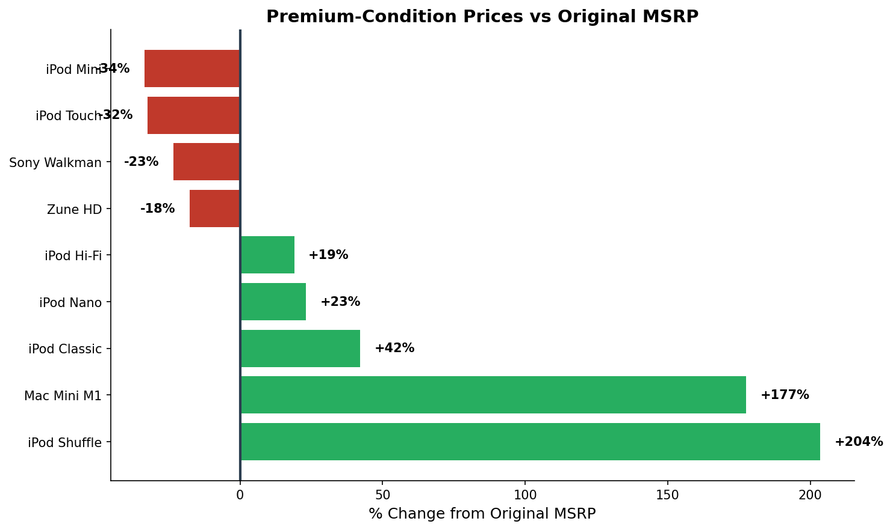

The Dumbest iPod Won
The screenless iPod Shuffle is the only discontinued Apple device selling above its original price
When Apple discontinued the iPod Shuffle in 2017, it seemed like the end of an era. The tiny, screenless music player—dismissed by many as the "dumb" iPod—had been overshadowed by smartphones for years. But nearly a decade later, something unexpected has happened: the Shuffle is now worth more than it cost new.
An analysis of 900 eBay listings across nine discontinued devices found that the iPod Shuffle is the only one where even average listings sell above the original retail price. While most vintage tech depreciates the moment it leaves the shelf, Shuffles now sell for a median of $65—a 33% premium over their original $49 price tag. Premium-condition units fetch nearly $150, more than triple the original cost.

Source: eBay Browse API, 100 listings analyzed. Chart by Kylie Clifton.
The Shuffle isn't alone in the appreciation game—but it is the clear winner. When looking at premium-condition listings (the top 25% by price), five of nine devices analyzed showed gains over their original MSRP: the iPod Classic (+42%), iPod Nano (+23%), iPod Hi-Fi (+19%), and even the Mac Mini M1 (+177%). But none matched the Shuffle's across-the-board gains.

Premium-condition (top 25%) asking prices compared to original retail. Source: eBay Browse API. Chart by Kylie Clifton.
The losers tell an equally important story. The iPod Touch—Apple's most feature-rich iPod—has lost 66% of its value. The Microsoft Zune HD, despite its cult following, is down 69%. The iPod Mini, once a cultural phenomenon, now sells for less than $70.
"People don't like it because that thing can be done on the phone, so they don't need any extra device to carry on."
Mohammad Uddin, manager of TSS Phones and Computers in New York, has spent ten years in the used device business. He's seen the occasional customer ask for a classic iPod, but says there's "no significant number" of requests. When they do come in, though, the appeal is clear: "They always like the style," he says. "How it used to play the music... they can use it for a long time."
That nostalgia doesn't extend to every old Apple product. Uddin explains why the iPod Touch fails where the Shuffle succeeds: "That thing can be done on the phone, so they don't need any extra device to carry on."
There's a pattern here. The devices that hold value are the ones that do one thing well—play music—without trying to be a smartphone. The Shuffle had no screen, no apps, no distractions. The Classic had its iconic click wheel. The Hi-Fi was just a speaker. Meanwhile, the Touch was always just a worse iPhone, and now that phones are ubiquitous, nobody needs one.
The data suggests we're not in the middle of a massive nostalgia bubble. Uddin confirms it's a "smaller bubble"—real demand from a niche audience, not a mainstream revival. But for those niche buyers, simplicity has become a feature, not a limitation. In an age of infinite notifications and algorithmic feeds, a device that just plays music has found its moment.
The dumbest iPod turned out to be the smartest investment.
Data: Analysis of 900 eBay listings collected via eBay Browse API on March 1, 2026. Original MSRP data from Apple press releases and product archives.
GitHub Repository: github.com/kylieklifton/ipod-price-analysis